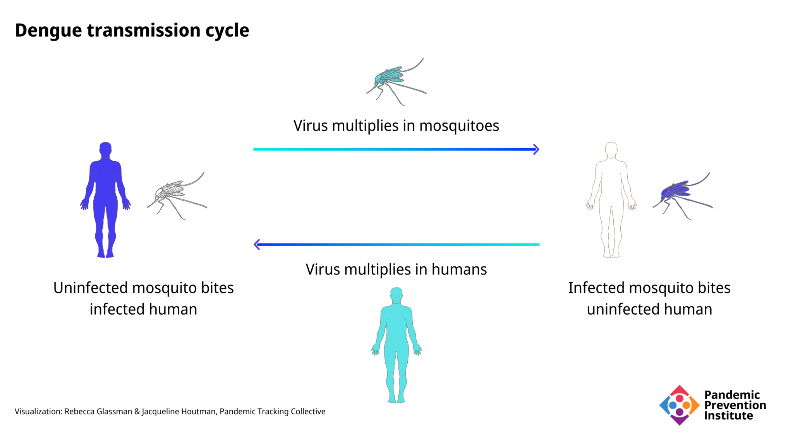
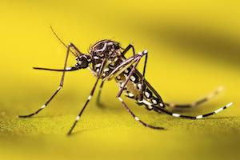
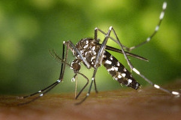
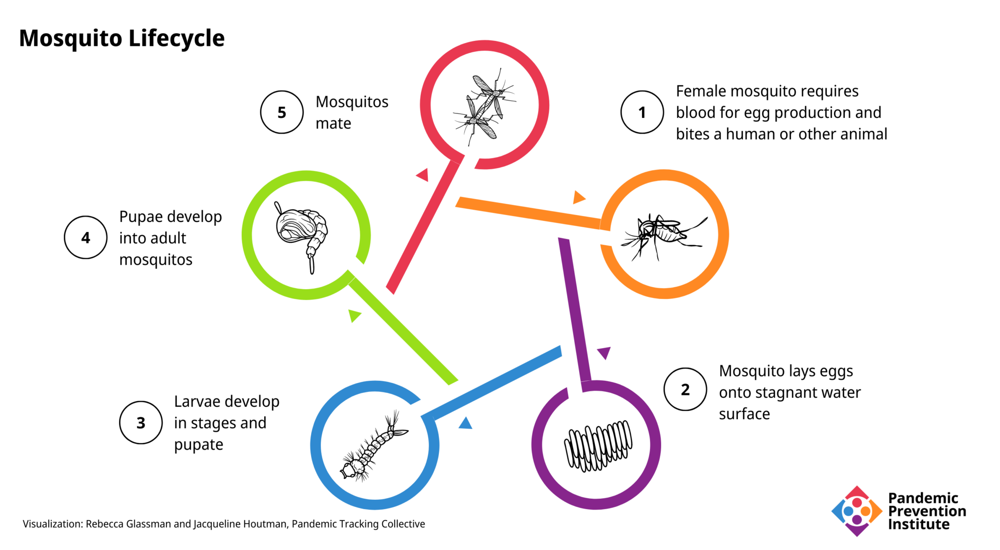

The Increasing Burden of Dengue Fever in a Changing Climate
Multiple effects of climate change affect the incidence and severity of dengue fever.
Originally published at rockefellerfoundation.org/blog/the-increasing-burden-of-dengue-fever-in-a-changing-climate/
When they think of climate change, many people envision global warming and a rising sea level. While climate change is indeed warming the globe and causing the seas to rise, that is not the only detrimental effect. Disruption of weather patterns can include stronger and more frequent storms, droughts, wildfires, and heat waves. Climate change can also affect agriculture and land use. As regions become less livable, more people will become climate refugees. These other consequences of climate change can have profound effects on infectious diseases. In this way, climate change can contribute to the emergence or spread of diseases.
Dengue fever, a disease transmitted by mosquitoes, illustrates the potential for climate change to promote disease outbreaks. In the last fifty years, the incidence of dengue fever has increased 30-fold by one estimate, to an annual rate of 390 million infections worldwide, 96 million of which are symptomatic cases. An estimated 3.9 billion people, in 129 countries, are at risk of infection.
The virus
The virus that causes dengue is a member of the genus Flavivirus, which also includes yellow fever virus, West Nile virus, and Zika virus. Dengue virus exists as four distinct serotypes (closely related forms of the virus). Immunity from infection with one serotype may provide lifelong protection from that serotype, but is only partially protective against other serotypes.
The disease
Infection with the dengue virus can result in a wide spectrum of disease severity. Approximately 75% of infections cause little or no clinical disease, but some may produce flu-like symptoms such as high fever, headache, and painful body aches that have earned it the nickname of “breakbone fever.” Patients usually recover in a few weeks with supportive care, including rest, hydration, and pain killers.
In 1-5% of cases, severe dengue can develop, as dengue hemorrhagic fever or dengue shock syndrome. The severe bleeding, shock, and organ failure can be fatal in up to 20% of severe cases, but treatment (supportive care, intravenous fluids and electrolytes, blood transfusions), can reduce mortality in severe cases to less than 1%. A second infection with a different serotype than the first infection increases the risk of severe dengue.
A vaccine to prevent dengue fever has been approved in twenty countries. It should only be used in individuals who have previously been infected with the dengue virus. Those who receive the vaccine without a previous history of infection are at a higher risk of severe dengue. Recently, however, a new vaccine was approved for use in Indonesia that does not require a previous infection. That vaccine has also been recommended by the European Medicines Agency, a step toward approval for use in the EU.
The vector
The dengue virus cannot normally be transmitted from person to person directly, except in rare instances, such as through a blood transfusion or to a fetus during pregnancy. Transmission usually occurs through a mosquito vector. Mosquitoes are infected when they bite an infected person. The virus replicates in the infected mosquito, which can then transmit the virus to another person in a subsequent blood meal.

Dengue fever is transmitted by mosquitoes of two species: Aedes aegypti and Aedes albopictus. According to one study, of 250 countries or territories worldwide, Ae. aegypti can survive in 188 and Ae. albopictus can survive in 197. Endemic cases of dengue fever (not associated with travel) were reported in 111 of these countries/territories.


Ae. aegypti, known commonly as the yellow fever mosquito, is the primary vector, and also carries the zika and chikungunya viruses. Ae. aegypti feeds mostly on humans, and is well-adapted to urban environments, living both indoors and outdoors.
Ae. albopictus, known commonly as the Asian tiger mosquito or forest mosquito, can also transmit the dengue virus (although less effectively). Ae. albopictus lives mostly outdoors and favors areas with heavy vegetation, feeding on animals, but it may also thrive in urban areas and feed on humans. Native to Asia, Ae. albopictus has spread to other areas due to human activity, and was introduced to the United States in the 1980s in shipments of used tires. Its range is expanding rapidly.
Both species of mosquito bite aggressively during the day and require pools of stagnant water to breed. These pools may be as small as a teaspoon and are found in nature (in puddles or tree holes) or in human environments (in trash, flower pots, buckets, etc.) Transmission is generally human→mosquito→human. Animal reservoirs such as nonhuman primates are possible, but the role of animal→mosquito→human transmission is not clear.

The influence of climate and climate change
Dengue, like many diseases, has periods of increased incidence and transmission. Many areas have seasonal variations in dengue incidence, for example, with increases associated with rainy or monsoon seasons. Natural weather perturbations, such as those caused by the El Niño Southern Oscillation cycles, can influence the number of dengue cases, as can individual events, such as hurricanes or floods. Several studies have related these increases to elevated temperature, precipitation, or humidity.
Environmental changes are exacerbated by the effects of climate change, which can in turn exacerbate the impact of dengue fever.
- The mosquito vector is especially sensitive to weather since its body temperature depends on the temperature of the environment.
- The human response to heat, drought, flooding, and wildfires can influence land use choices for communities and agriculture, contributing to an increased disease burden through such activities as deforestation, urbanization, and migration.
Some of the climate change hazards that have been shown to affect the incidence and/or geographical distribution of dengue fever are summarized here:
- Higher temperatures can affect the reproductive capacity of mosquitoes, stimulating egg hatching and accelerating growth of the larvae, thus decreasing the time to maturity.
- At higher temperatures, adult mosquitoes bite more frequently.
- Warmer temperatures enhance dengue virus replication within the mosquitoes’ bodies, so that they are able to infect new hosts more quickly.
- A warmer climate also affects the range of Aedes mosquitoes, allowing them to overwinter in more regions, and expanding the range to higher elevations and latitudes.
- Warmer temperatures can extend the length of the season when mosquitoes are active, allowing a longer time period for dengue transmission.
- High humidity increases the survival, feeding behavior, and egg development of Aedes mosquitoes.
- Excess precipitation, storms, flooding, and rising sea level can increase Aedes mosquito populations by providing the shallow, stagnant pools of water they need to reproduce. Recent catastrophic flooding in Pakistan, for example, has resulted in a massive increase in dengue cases.
- Perhaps surprisingly, drought can contribute to mosquito populations because people collect and save water in containers that can provide breeding places for mosquitoes.
- Urbanization or deforestation can increase the risk of dengue fever by initiating contact with vector populations that had previously been more isolated from inhabited areas.
- Reduced agricultural performance can lead to malnutrition, which weakens the human immune system and worsens the ability to resist infectious diseases, including dengue fever.
- Interruption of vector control programs during natural disasters can worsen outbreaks of vector-transmissible diseases like dengue fever.
- As land becomes unlivable or unfarmable, people will need to migrate, becoming climate refugees. As people move into new areas, they may carry diseases, including dengue, with them, or they may be newly exposed to endemic diseases to which they have little resistance. They may need to settle into refugee camps, where there may be outbreaks of dengue fever.
The dengue explosion
The World Health Organization (WHO) has reported an eightfold increase in the annual number of reported dengue cases over the last twenty years. Reported annual deaths increased more than fourfold between 2000 and 2015. Severe dengue epidemics had occurred in only seven countries before 1970, but the disease is now endemic in over 100 countries, and distribution of dengue is expanding within countries. While increased awareness, diagnosis, and reporting may account for some of this increase, climate change likely plays a significant role through a variety of mechanisms such as those listed above.
Severe dengue was rare in India before 1996, but India now bears the majority of the global dengue burden. Although dengue follows a general pattern associated with the monsoon season, the annual incidence of dengue in India has increased dramatically in the last ten years. Numerous factors may contribute to this increase. With a lack of financial and medical resources, diagnosis and treatment are delayed. Urbanization may play a large role. Mosquito control programs are insufficient to control the vector population. Climate change in India has increased both the temperature and frequency of heavy rainfalls, both of which promote mosquito activity and expand their geographic range. India is not, however, the only country suffering from a dengue uptick:
- Dengue cases have surged in other endemic areas, such as in Vietnam, where cases in 2022 are four times the number of cases reported in 2021.
- Surges may be the result of weather events, which are exacerbated by climate change. Recent catastrophic flooding in Pakistan, for example, has resulted in a massive increase in dengue cases
- Dengue is expanding geographically within Brazil. In the past five years, 481 communities reported local transmission for the first time, with 63 new communities affected in just the first three months of 2022. Scientists attribute the rapid expansion of dengue in Brazil to climate change, urbanization, human mobility, and a larger area of the country becoming hospitable to the mosquito vectors.
- In Nepal, dengue has been reported more frequently at higher altitudes in recent years, since mosquitoes are able to survive at these elevations due to a warmer climate.
- Some previously unaffected subtropical countries, such as Niger, have reported their first ever dengue cases.
- Cases are even increasing in areas outside the tropical and subtropical zones. In France, for example, no locally transmitted cases of dengue had been documented prior to 2010, but 65 such cases have been reported in 2022 as of mid-October. This is due in part to the expanded range of Ae. albopictus, which can now be found in two thirds of the country.
Dengue and COVID-19
The interactions between climate and public health have become even more evident with the onset of the COVID-19 pandemic, which has exacerbated the impact of dengue fever in several ways. Overlapping symptoms and coinfections have complicated diagnosis. Facilities and personnel dedicated to vector control, research, and healthcare have been diverted from dengue to COVID-19, placing extra pressure on already strained health systems.
In the summer of 2020, Singapore suffered a particularly bad dengue season, with record numbers of weekly dengue cases. Reasons for the surge include warmer, wetter weather, circulation of an uncommon dengue virus serotype (to which residents had only partial immunity), and COVID-19 restrictions, which resulted in people spending more time at home, where mosquito populations are high.
Conversely, in Australia, dengue cases have declined significantly since the beginning of the pandemic. The decline is attributed to COVID-19 travel restrictions, which have prevented travelers from dengue-endemic areas from bringing the disease into the country.
Beyond dengue fever
Dengue is not the only disease that can be exacerbated by climate change. A recent study proposed that 58% of known infectious diseases can be negatively affected by the hazards of climate change. Diseases transmitted by mosquitoes, such as yellow fever, zika, and chikungunya could be affected in a similar manner as dengue fever. Diseases carried by other vectors, and those with animal reservoirs, may also be affected by climate change, as can those transmitted by water, air, and food.
The many effects of climate change increase the risk for hundreds of infectious diseases by numerous pathways. Whether by land use changes increasing tick-borne Lyme disease, floods affecting schistosomiasis spread by snails, or drought prompting hantavirus-infected mice to invade homes in search of food, climate change is a serious threat to human health. While mitigation efforts to interrupt such individual transmission pathways are certainly helpful, a concerted effort to halt climate change will do much more to reduce the current and future burden of infectious diseases.